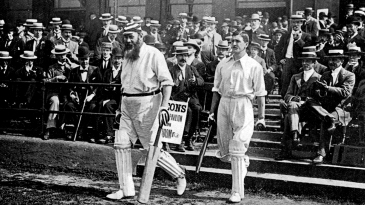
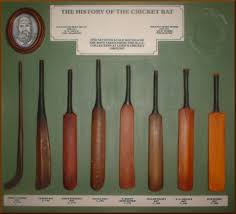
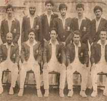
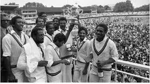

Cricket
Cricket was probably created during Saxon or Norman times by children living in the Weald, an area of dense woodlands and clearings in south-east England that lies across Kent and Sussex.[1] The first definite reference is dated Monday, 17 January 1597 ("Old Style" Julian date, the year equating to 1598 in the modern calendar).
There have been several speculations about the game's origins including some that it was created in France or Flanders. The earliest of these speculative references is dated Thursday, 10 March 1300 and concerns the future King Edward II playing at "creag and other games" in both Westminster and Newenden. It has been suggested that "creag" was an Olde English word for cricket but expert opinion is that it was an early spelling of "craic", meaning "fun and games in general".[2]
It is generally believed that cricket survived as a children's game for many generations before it was increasingly taken up by adults around the beginning of the 17th century. Possibly cricket was derived from bowls, assuming bowls is the older sport, by the intervention of a batsman trying to stop the ball from reaching its target by hitting it away. Playing on sheep-grazed land or in clearings, the original implements may have been a matted lump of sheep’s wool (or even a stone or a small lump of wood) as the ball; a stick or a crook or another farm tool as the bat; and a stool or a tree stump or a gate (e.g., a wicket gate) as the wicket.
The game continued to spread throughout England and, in 1751, Yorkshire is first mentioned as a venue.[16] The original form of bowling (i.e., rolling the ball along the ground as in bowls) was superseded sometime after 1760 when bowlers began to pitch the ball and study variations in line, length and pace.[11] Scorecards began to be kept on a regular basis from 1772 and since then an increasingly clear picture has emerged of the sport's development.[17]
An artwork depicting the history of the cricket bat
The first famous clubs were London and Dartford in the early 18th century. London played its matches on the Artillery Ground, which still exists. Others followed, particularly Slindon in Sussex which was backed by the Duke of Richmond and featured the star player Richard Newland. There were other prominent clubs at Maidenhead, Hornchurch, Maidstone, Sevenoaks, Bromley, Addington, Hadlow and Chertsey.
But far and away the most famous of the early clubs was Hambledon in Hampshire. It started as a parish organisation that first achieved prominence in 1756. The club itself was founded in the 1760s and was well patronised to the extent that it was the focal point of the game for about thirty years until the formation of MCC and the opening of Lord's Cricket Ground in 1787. Hambledon produced several outstanding players including the master batsman John Small and the first great fast bowler Thomas Brett. Their most notable opponent was the Chertsey and Surrey bowler Edward "Lumpy" Stevens, who is believed to have been the main proponent of the flighted delivery.
It was in answer to the flighted, or pitched, delivery that the straight bat was introduced. The old "hockey stick" style of bat was only really effective against the ball being trundled or skimmed along the ground.
- 
- 
- 
- 